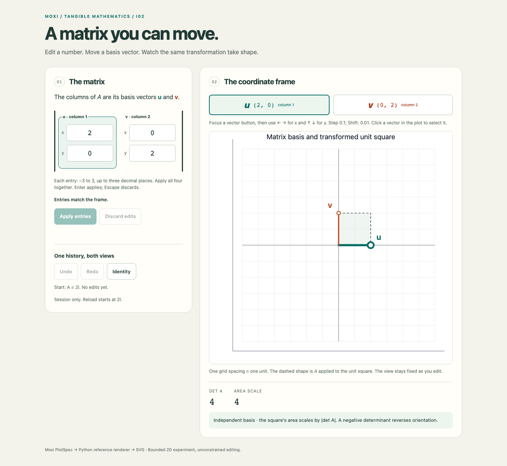
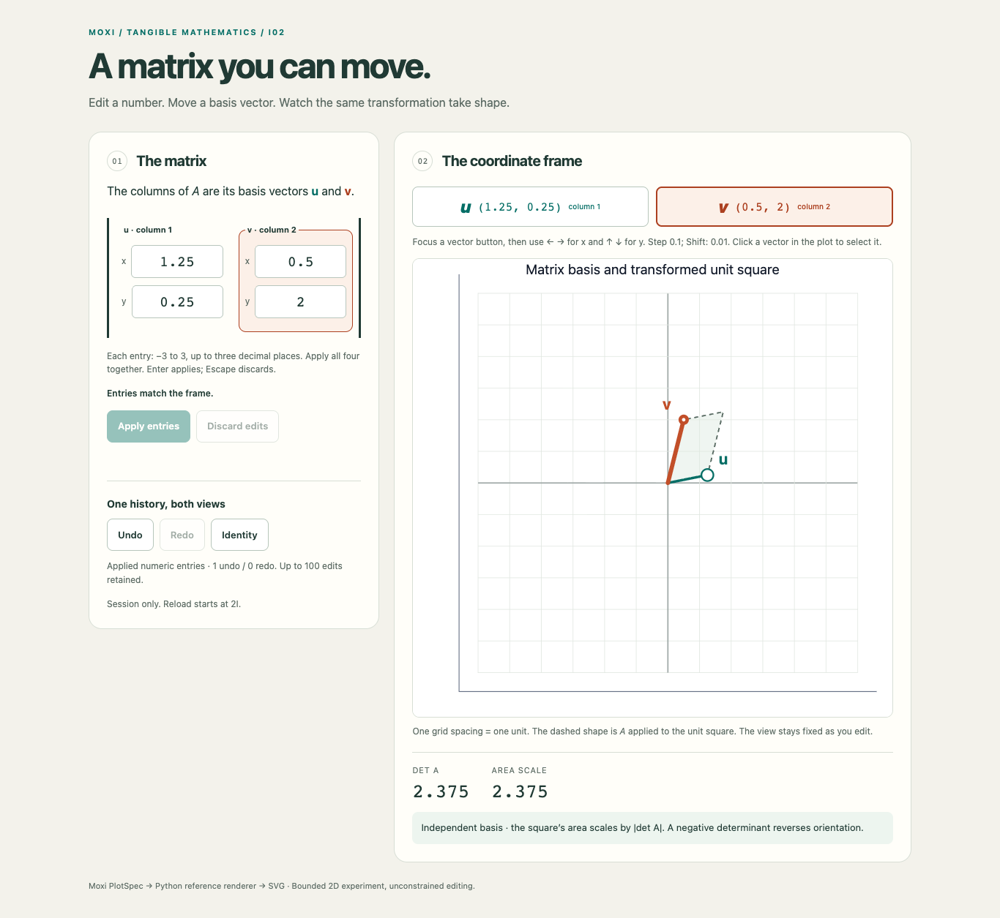
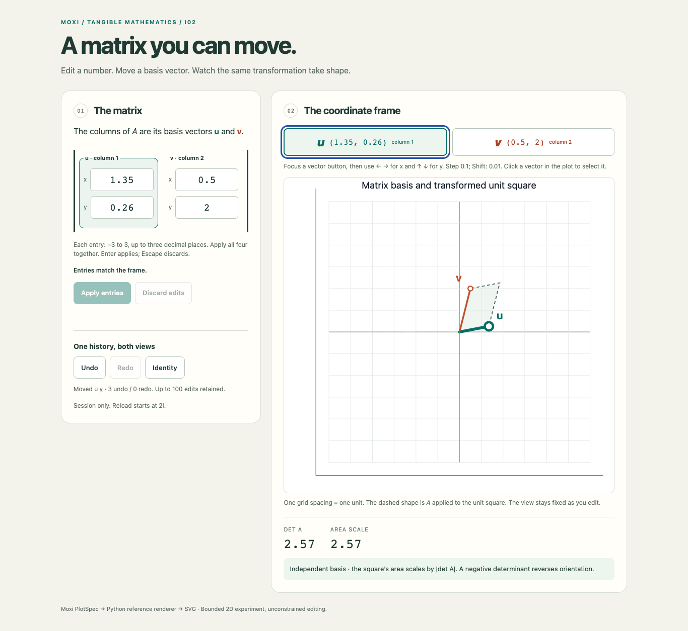
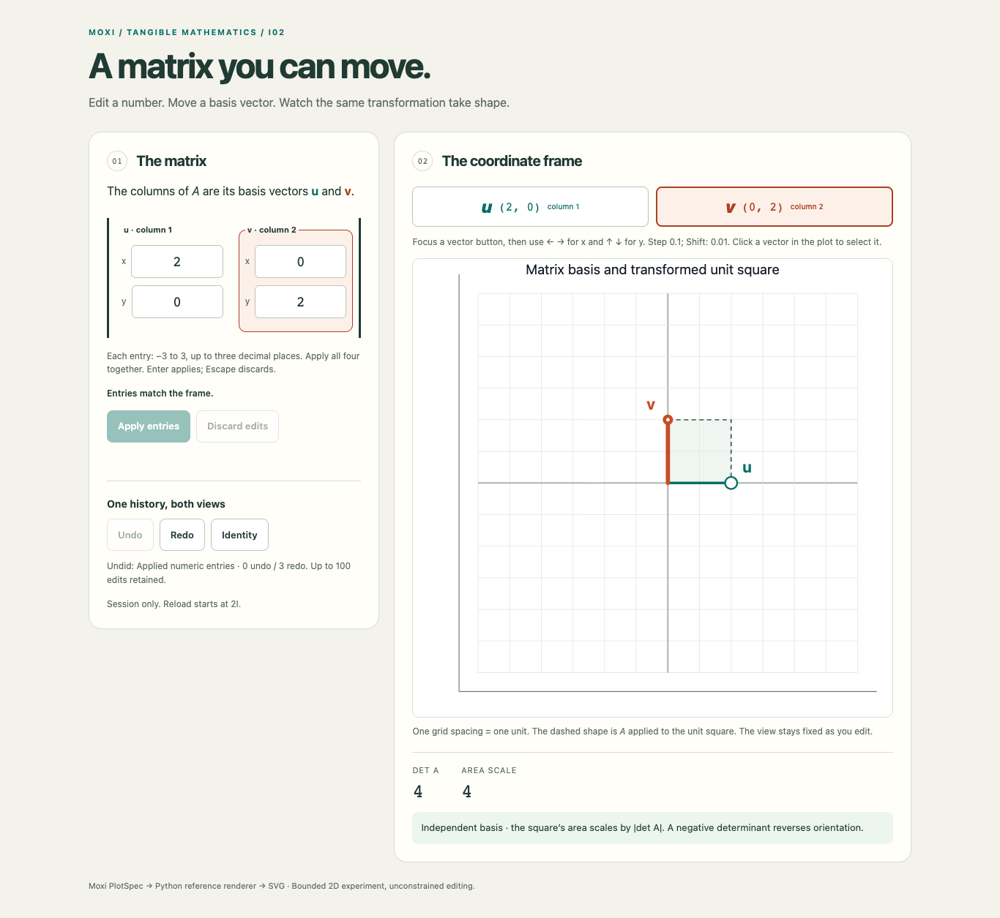
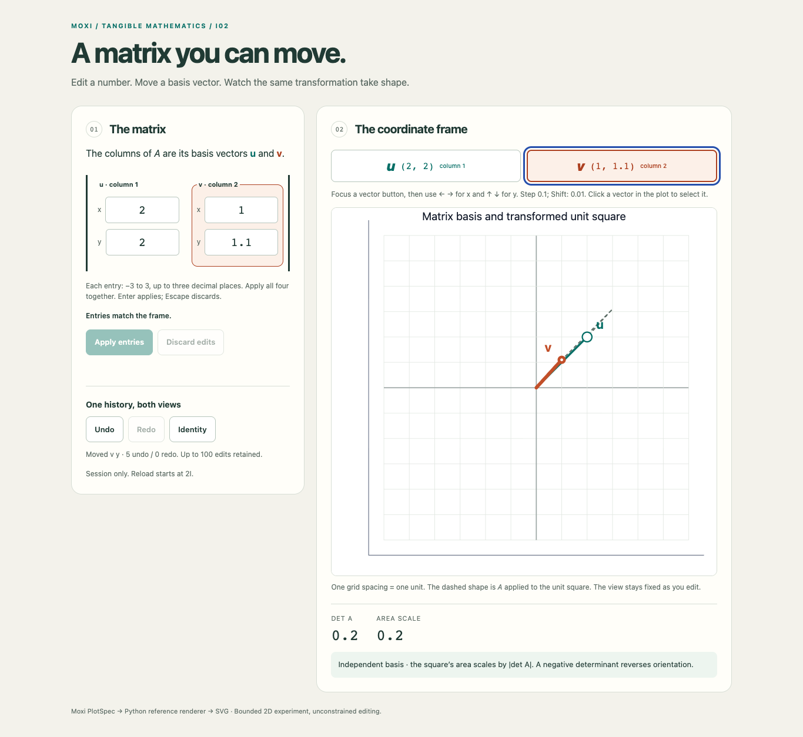
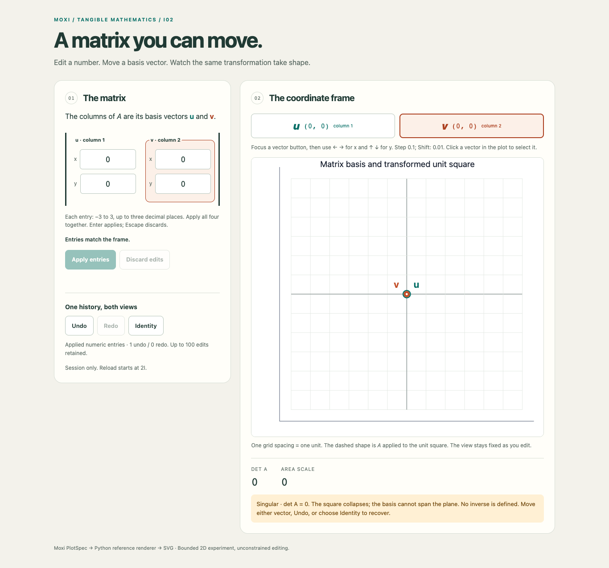
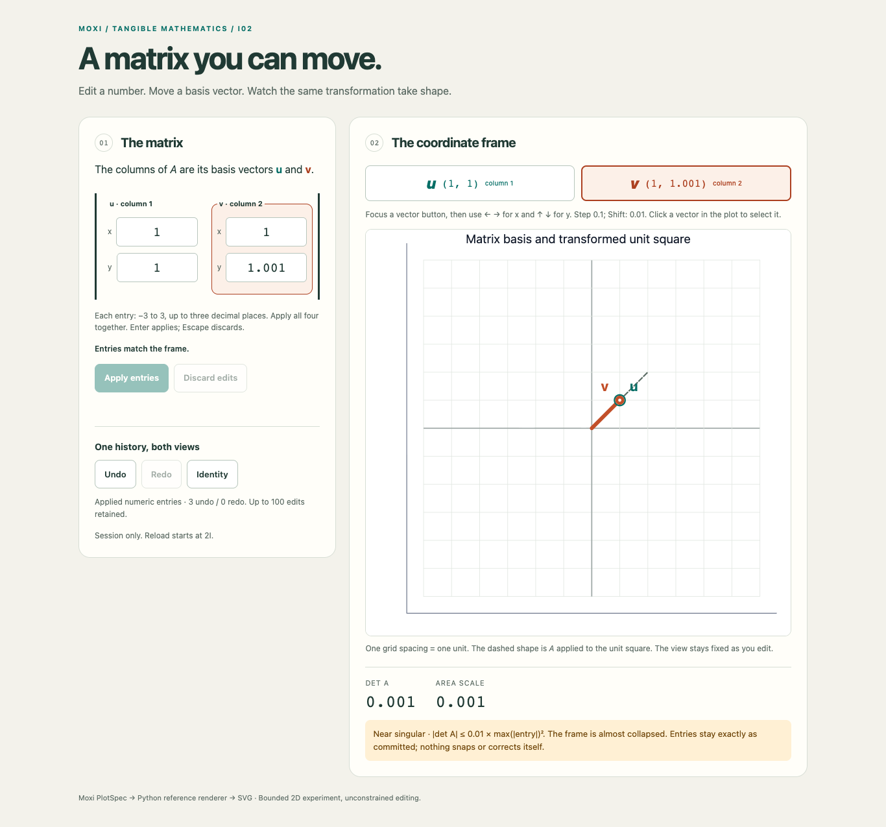
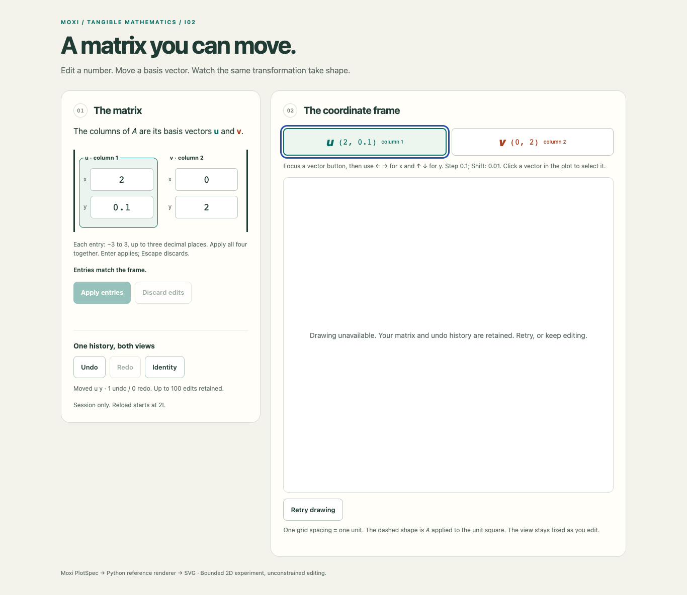
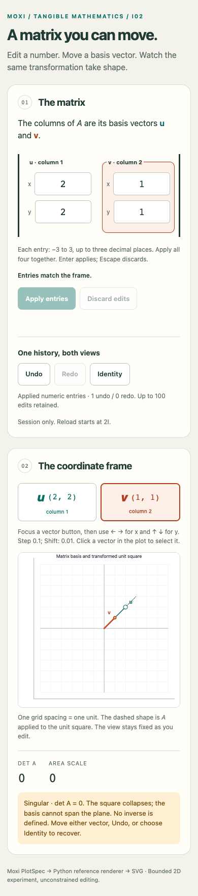
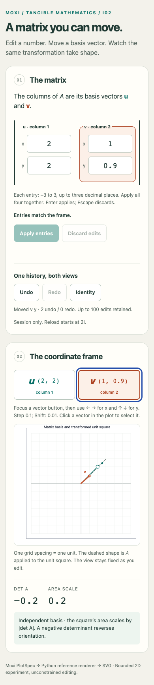

Live Chrome captures of the normal consumer. Use Previous / Next, the numbered links, or ← / →. Open an image for its full size.
Steps: Open the normal loopback UI at its initial 2I matrix.
Observed / pass: Both basis vectors and the transformed square appear. det A = 4; column u is selected.

Steps: Enter 1.25, 0.5, 0.25, 2 in row-major order; Apply entries.
Observed / pass: The new frame uses those entries. The last edited column v is selected in both views; det A = 2.375.

Steps: Click u’s plotted endpoint, press Right, then Shift+Up.
Observed / pass: u moves by (0.1, 0.01), entries become 1.35 and 0.26, det A = 2.57, and keyboard focus stays on u.

Steps: Undo the two keyboard moves and the numeric edit, in that order.
Observed / pass: The initial matrix, geometry and determinant return together. Three redo steps are available.

Steps: Apply columns u=(2,2) and v=(1,1).
Observed / pass: The square collapses onto a line; det A = 0. The UI explains that no inverse exists and offers recovery.
Steps: Focus v and press Up once.
Observed / pass: The basis becomes independent again: v=(1,1.1), det A = 0.2. The singular edit was never snapped or discarded.

Steps: Apply the zero matrix; focus each separate basis button.
Observed / pass: Both controls remain reachable even though their plotted endpoints coincide. det A = 0; recovery remains available.

Steps: Apply u=(1,1), v=(1,1.001).
Observed / pass: det A = 0.001 and a near-singular explanation appears. All three decimals remain unchanged.

Steps: Block the local render request, then move u upward.
Observed / pass: The committed entry is 0.1 and Undo remains available. Stale geometry and metrics are hidden; Retry drawing is offered.

Steps: At 390×844, apply the same collinear columns.
Observed / pass: The two cards stack without horizontal scrolling. Numeric entries, basis controls and singular recovery remain available.

Steps: Focus v and press Down on the narrow layout.
Observed / pass: v becomes (1,0.9); det A = −0.2. Focus and shared column selection survive the render.
